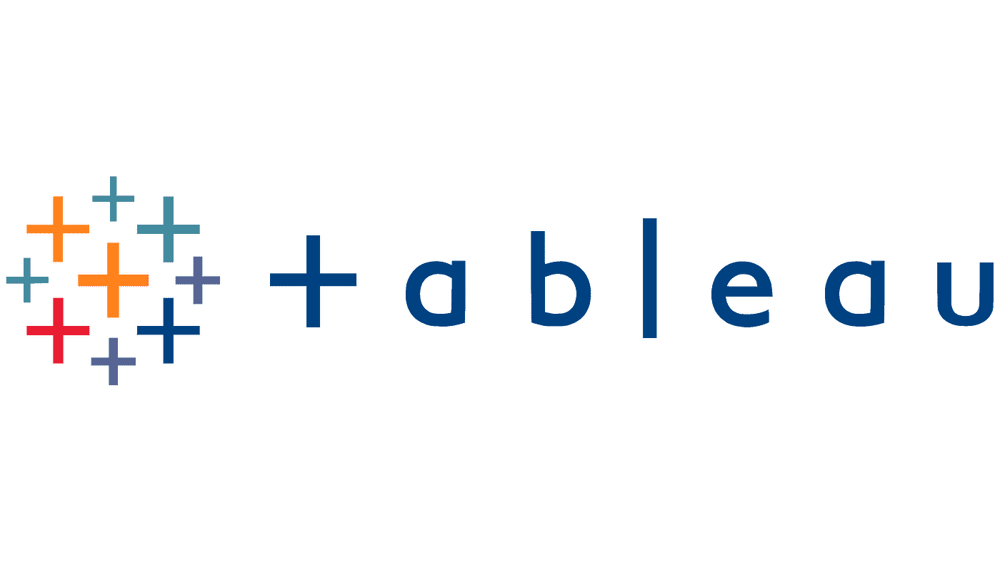

This repository contains a Jupyter Notebook (Case_Study_Marketing_Analysis.ipynb) presenting a case study on marketing analysis. The notebook explores various marketing strategies, data analysis techniques, and insights derived from marketing data.

The Forbes Billionaires Analysis project provides a comprehensive exploration of the world's billionaires using data from Forbes. The accompanying Jupyter Notebook contains detailed analysis, visualizations, and insights derived from the Forbes billionaires dataset.
The Simple Slot Machine Game is a basic implementation of a virtual slot machine, allowing users to experience the thrill of spinning the reels and potentially winning virtual rewards. This project serves as a beginner-friendly introduction to game development concepts and randomization algorithms in Python.
From the previous several decades, psychological health issues become more widespread among individuals. The present work delves into the realm of predictive modelling applied to predict psychological disorder, employing a multifaceted approach to improve the accuracy of mental health issues. By carefully arranging a complicated set of processes including data pre-processing, studying the data, constructing models, and improving them, the study endeavours to unlock the latent potential of machine learning algorithms for accurate predictions in the context of mental health issues.

The dataset consists of metadata for all 45,000 movies listed in the Full MovieLens Dataset. The dataset consists of movies released on or before July 2017. Data points include cast, crew, plot keywords, budget, revenue, posters, release dates, languages, production companies, countries, TMDB vote counts and vote averages.
The main Movies Metadata file. Contains information on 45,000 movies featured in the Full MovieLens dataset. Features include posters, backdrops, budget, revenue, release dates, languages, production countries and companies.

This holds all of my Tableau Dashboards.
This repository contains data and analysis on Machine Learning (ML) test scores. The dataset includes information about the test scores of students, represented by their unique user IDs, the batch they belong to, and their scores out of 7.